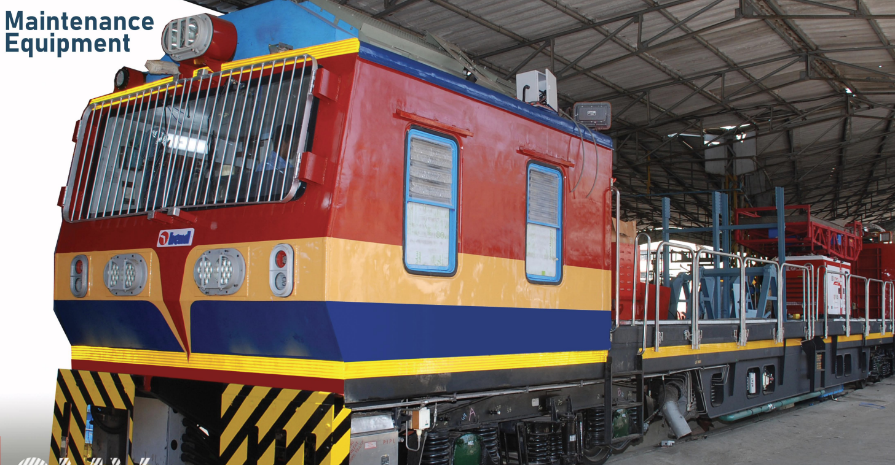

Catenary Maintenance Vehicle
The CMV is meant for periodic inspection, patrolling, and maintenance of overhead equipment on electrified broad and standard gauge metro routes. It is used to attend breakdown sites, is suitable for underground use, and can erect and restore damaged small lengths of catenary and contact wires.
Max. Speed
65mm
Hauling Capacity
Fully loaded 40T Trailer Wagon.


| Feature | Details |
|---|---|
| Dimensions | - Track gauge:1435mm(SG) - Length:21336mm (Over Body) - Width:2900mm - Height:3845mm |
| Brakes | Compressed air brake with tread brake units applied on all wheels, gradual application and release. |
| Axles | - Two powered Axles and Two trailing Axles - 16 Tonnes Load Capacity |
| Bogie | Two axle bogie with floating bolster suspension arrangement with primary and secondary as a helical coil spring |
| Final Drive | Axle mounted helical gear box (Double reduction) |
| Parking brakes | Spring loaded, Electrically/ Pneumatically operated. |
| Crane with Interchangeable basket | Lifting capacity of hook 1T @ 5m distance & Basket load carrying capacity -300Kg + Tools. |
| Lifting & Swiveling Platform | Low raised, hydraulically lifted & electrically swiveling with 500kg + tools lifting capacity. |